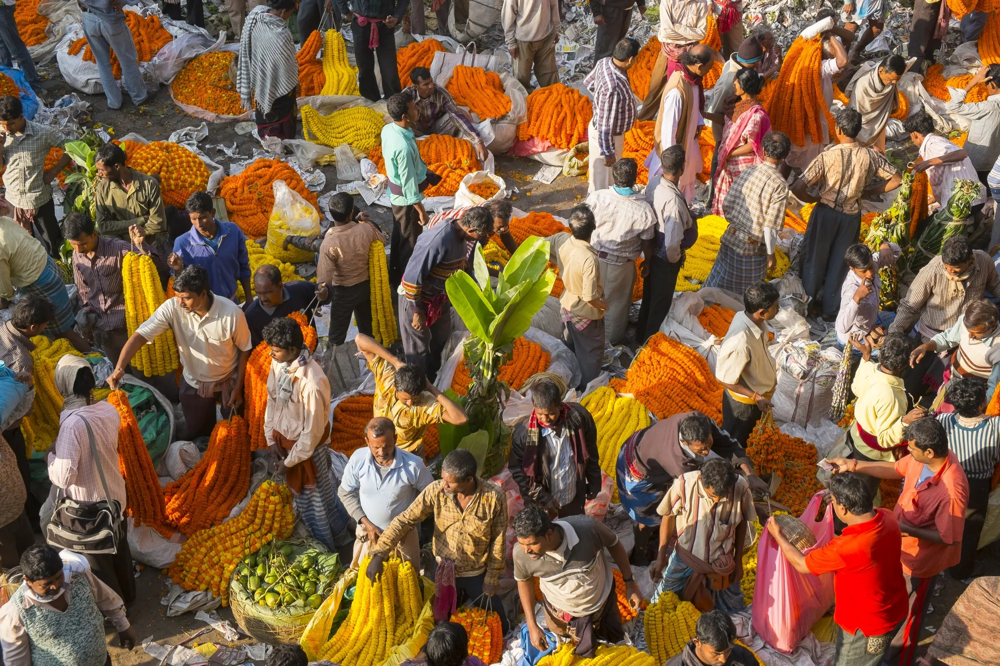

Lesson 1
Impormal na Sektor
- Sektor ng ekonomiya na walang pormal o salat sa mga dokumentong kailangan sa pagsasagawa ng gawaing pang-ekonomiya.
- Ang kita ng sektor na ito ay hindi naisasama sa kabuuang Gross Domestic Product (GDP) ng bansa.
- Paraan ng mamamayan upang magkaroon ng kabuhayan o dagdag kita.
- Nagdudulot ng paglikha ng mga produkto at serbisyong tumutugon sa pangangailangan ng tao.
- Kilala rin sa tawag na Underground Economy.

Lesson 2
Halimbawa ng mga Kabilang sa Sektor
- Nagtitinda sa kalsada
- Pedicab driver
- Karpintero
- Hindi rehistradong pampublikong sasakyan

Lesson 3
Katangian ng Impormal na Sektor
- Hindi nakarehistro sa pamahalaan
- Hindi nagbabayad ng buwis mula sa kinita
- Walang legal at pormal na balangkas mula sa pamahalaan
Lesson 4
Iba’t Ibang Anyo ng Impormal na Sektor
- Mga gawaing ginagawa sa loob ng tahanan
- Mga gawaing pansibiko, pagkakawanggawa, at panrelihiyon
- Pagtitinda sa sari-sari store, sidewalk, at paglalako
- Ilegal na gawain tulad ng pagnanakaw, pagbebenta ng ilegal na gamot, piracy, at prostitusyon
Lesson 5
Kahalagahan ng Impormal na Sektor
- Sinasalo ang mga mamamayang hindi makapasok sa regular na trabaho.
- Nagbibigay ng pagkakataon sa maraming Pilipino na makapaghanapbuhay.
- Nagsisilbing tagasalo sa panahon ng pangangailangan.
- Nakatutulong sa konsyumer dahil mura ang mga produkto at serbisyo.
Lesson 6
Dahilan kung Bakit Pumapasok ang Mamamayan
- Makaiwas sa pagbabayad ng buwis
- Makaiwas sa mahaba at masalimuot na proseso sa pamahalaan
- Kakulangan ng regulasyon mula sa pamahalaan
- Hindi nangangailangan ng malaking kapital
- Malabanan ang kahirapan
Lesson 7
Epekto sa Ekonomiya
- Pagbaba ng nalilikom na buwis ng pamahalaan
- Banta sa kapakanan ng mga mamimili
- Paglaganap ng ilegal na gawain
Lesson 8
Mga Batas at Patakaran
- Iahon sa kahirapan ang mga Pilipinong kabilang sa impormal na sektor
- Upang maisakatuparan ang mga probisyon ng batas na ito ay itinatag ang National Anti-Poverty Commission
- Inaalis ang lahat ng uri ng diskriminasyon laban sa kababaihan
- Pangunahing batas ng bansa para sa mga manggagawa na itinatag noong Mayo 1, 1974
- Layuning palakasin ang pakikiisa ng iba't ibang sektor upang mapabuti ang kasanayan at kalidad ng yamang tao sa bans
- Nagtatakda ng tungkulin ng estado na paunlarin at pangalagaan ang seguridad at kagalingang panlipunan ng mga manggagawa
- Nagtatag ng Philippine Health Insurance Corporation (PhilHealth) upang matiyak na may maayos at sistematikong kaseguruhang pangkalusugan ang lahat ng Pilipino
Social Reform and Poverty Alleviation Act of 1997 (RA 8425)
Magna Carta of Women (RA 9710)
Philippine Labor Code (PD 422)
Technical Education and Skills Development Act (RA 7796)
Social Security Act of 1997 (RA 8282)
National Health Insurance Act of 1995 (RA 7875)
Lesson 9
Mga Programa para sa Mamamayan
- Nagbibigay ng pagsasanay at tulong pangkabuhayan para sa sariling hanapbuhay
- Tumutulong sa mahihirap na pamilya sa pagsasanay at pagsisimula ng negosyo
- nagbibigay ng suporta sa pamamagitan ng pagsasanay at pagkakaloob ng kagamitan upang mapaunlad ang kanilang hanapbuhay
- Pansamantalang kita para sa nasalanta, kapalit ng trabahong pang-rehabilitasyon
- Tulong-pinansyal sa pinakamahihirap na Pilipino kapalit ng pagsunod sa mga kondisyong pangkalusugan at pang-edukasyon ng kanilang mga anak
Dole Integrated Livelihood Program (DILP)
Self-Employment Assistance Kaunlaran Program (SEA-K)
Integrated Services for Livelihood Advancement of the Fisherfolks (ISLA)
Cash-For-Work Program (CWP)
Pantawid Pamilyang Pilipino Program (4Ps)